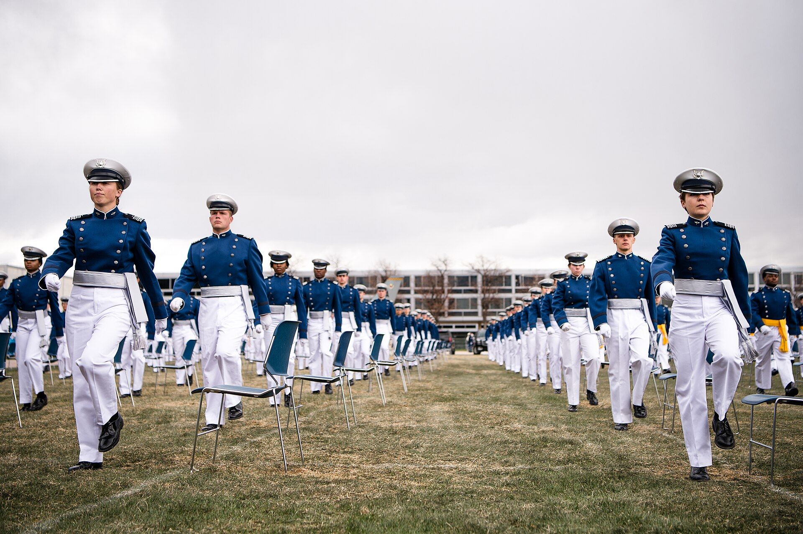
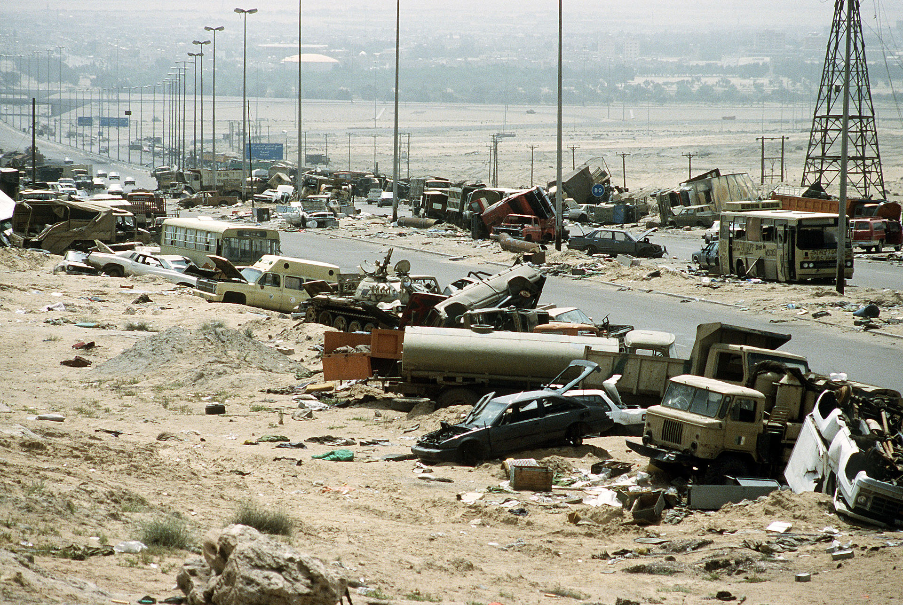

As a COMPASS
What got me in
I wanted to serve my country, as my grandfather and uncles had. My compass was Catholic, American, and masculine.
My compass drew me towards and then out of USAFA.
Matty Wegehaupt
U.S. Air Force Academy
BUEN 594 · Ethics panel

What got me in
I wanted to serve my country, as my grandfather and uncles had. My compass was Catholic, American, and masculine.
My compass drew me towards and then out of USAFA.
It wasn’t what I expected
When I saw people who shared my Catholic, American, and masculine values act in deeply racist, violent, and ignorant ways, it repulsed me. When my nation pursued a foreign policy I came to see as fraudulent, it repulsed me further. It drove me down to the basement of the beautiful Cadet Chapel, where “swords into plowshares” became real for me. I converted, which is to say I quit.
Values in conflict
Before I left, I intervened in that culture, unwillingly at first. As first-year cadets, we could put Christmas decorations in our windows. I put up a peace sign, and it made me the outcast of USAFA; I was called a communist.
Then I intervened willingly. In 1991 our country went to war with Iraq: heavy aerial bombing of cities and more than 116,000 allied combat sorties [1]. When the war broke out, I heard slurs aimed at people of Middle Eastern descent. In disgust, I blasted Elvis Costello’s “Peace, Love, and Understanding” into the quadrangle. Others thought I was disrespecting the troops. I was arguing for a deeper truth: peace on earth, goodwill toward all. The conflict of values made daily life difficult at times.

Why I faced it then. My horrible vision is the other path: staying silent, graduating, and facing that conflict years later, on a bombing run that seemed clearly illegal or unethical. That would have been hell.
Looking back, I saw so much mediocrity, yet also so much excellence. It is a very difficult thing.
My own recollections. The yearbooks document the years, not the events described here. Top: the Cadet Chapel at sunset and cadets marching onto the Terrazzo, 2020 (U.S. Air Force photo by Trang Le).